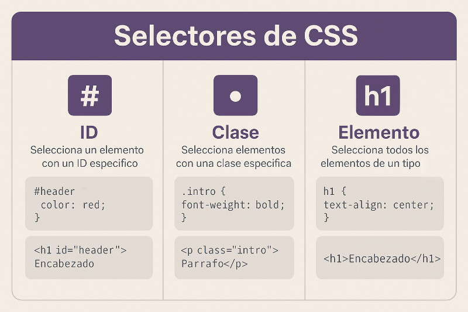

Las CSS (Cascading Style Sheets) son el lenguaje usado para darle diseño y presentación a un documento HTML. Mientras HTML define la estructura, CSS se encarga de colores, fuentes, tamaños y disposición de los elementos.
CSS funciona con reglas formadas por un selector, una propiedad y un valor. Las tres formas de aplicarlo son:
style directamente en la etiqueta<style> en el <head>.css separado vinculado con <link>
CSS me parece útil porque con pocas líneas se puede transformar completamente el aspecto de una página. Entender la cascada y la especificidad ayuda a evitar errores comunes al diseñar.
CSS es indispensable en el desarrollo web. Junto con HTML y JavaScript forma la base de cualquier página, permitiendo crear interfaces atractivas y funcionales.